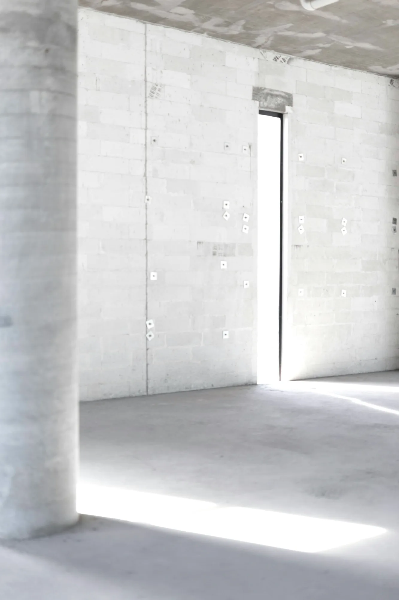
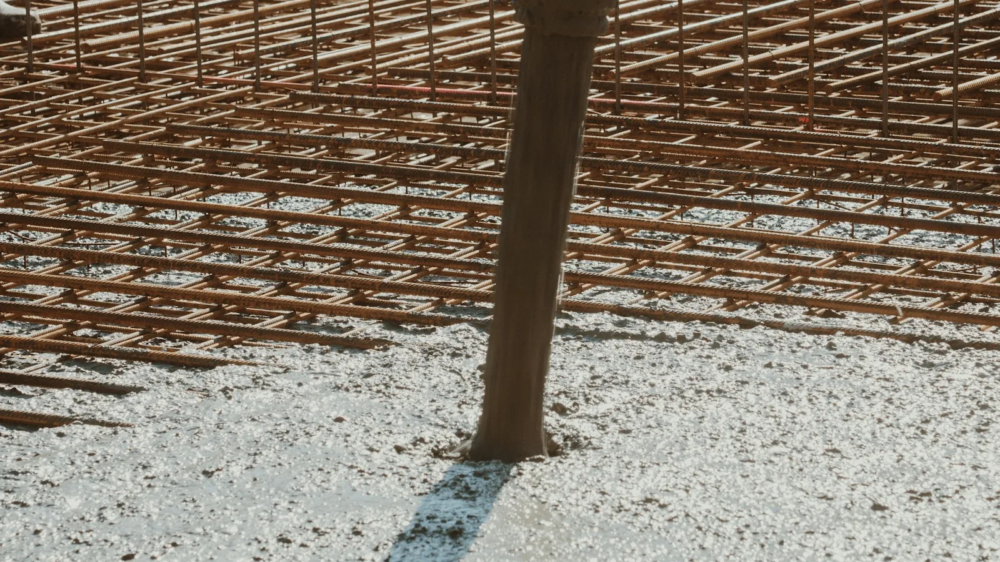
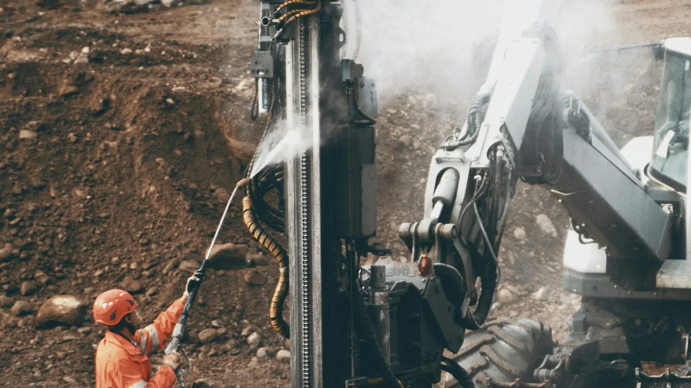
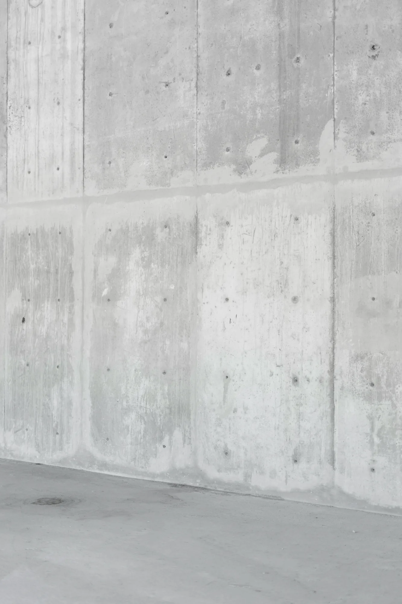
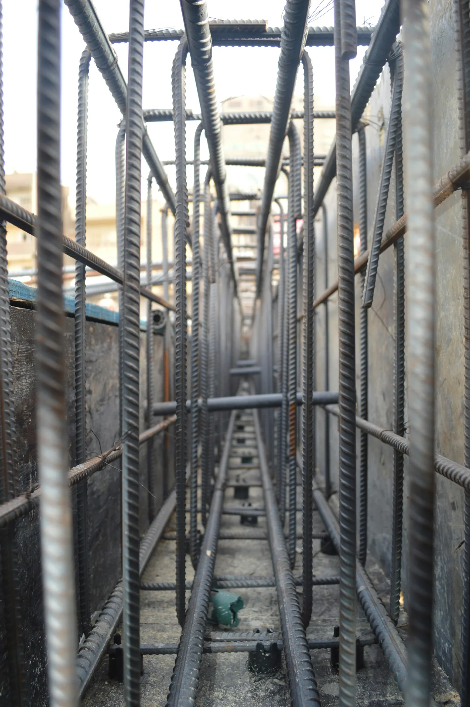
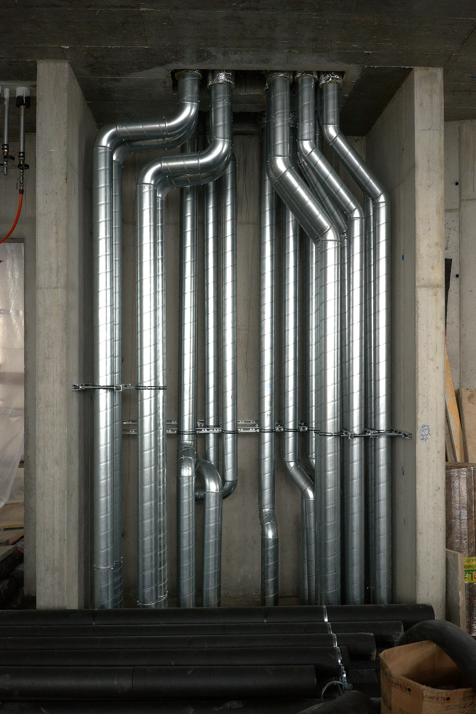

Performans, görünür olmadan önce inşa edilir.
Bir binanın taşıyıcı sistem güvenliği, kullanılabilirliği ve dayanıklılığı; projeye özgü zemin araştırması ve geoteknik değerlendirmeyle başlayan, deprem hesabı, taşıyıcı sistem tasarımı, donatı detaylandırması, betonun özelliklerinin belirlenmesi ve uygulanması, su yalıtımı, yapı kabuğu mühendisliği ve disiplinler arası bina tesisatı koordinasyonuyla devam eden bütünleşik bir mühendislik süreciyle sağlanır.
Nova, yapımı, tanımlanmış bir mühendislik sisteminin fiziksel olarak uygulanması şeklinde ele alır. Taşıyıcı sisteme ilişkin kabuller, malzeme şartnameleri, donatı detaylandırması, uygulama toleransları, yapım sıralaması ve sistemler arası birleşim gereklilikleri; hesap ve teknik dokümantasyondan saha uygulamasına, doğrulamaya ve işin tamamlanmasına kadar tutarlılığı korunması gereken, birbirine bağlı parametreler olarak değerlendirilir.
Betonarme yapılarda performans; belirtilen beton dayanımı ve donatı miktarının yanı sıra donatı düzenine, kenetlenme ve ek detaylarına, enine donatıya ve sargılamaya, betonun yerleştirilmesine ve sıkıştırılmasına, nominal beton örtüsüne, uygulama toleranslarına, kür koşullarına ve yapım derzlerinde uygulanan işlemlere de bağlıdır. Bu parametreler; kuvvet aktarımını, şekil değiştirme kapasitesini, çatlak kontrolünü, dayanıklılığı, kullanılabilirliği ve tasarımda esas alınan taşıyıcı sistem davranışını etkiler.
Aynı mühendislik disiplini, ana taşıyıcı sistemin ötesine de uzanır. Su yalıtımının sürekliliği, ısı yalıtımı ve hava sızdırmazlık katmanları, cephe ve cam sistemlerinin birleşimleri, geçişler, drenaj, akustik yapı bileşimleri ve bina tesisatları, tek bir bina sisteminin parçaları olarak koordine edilir. Tasarımdaki, malzeme uyumundaki veya uygulamadaki süreksizliklerin uzun vadeli performansı belirleyebildiği birleşim ve ara yüzlere özellikle dikkat edilir.
İstanbul'da geliştirilen projelerde taşıyıcı sistem ve yapım kararları; TBDY 2018, Türkiye Deprem Tehlike Haritası, projeye özgü geoteknik gereklilikler ile yükler, betonarme tasarımı, malzemeler ve uygulamaya ilişkin geçerli standartlar dâhil olmak üzere, proje ve ruhsat tarihi bakımından uygulanması gereken Türk mevzuatı ve teknik çerçevesi içinde değerlendirilir. Amaç, yalnızca münferit şartnamelere uygunluk sağlamak değil; hesap ve detaylandırmadan yapım, doğrulama ve uzun süreli kullanıma kadar mühendislik yaklaşımının sürekliliğini korumaktır.
Yapısal davranış, sistemin bütünüyle tanımlanır; taşıyıcı sistem, birbirinden bağımsız elemanların toplamı olarak değil, yükleri kesintisiz biçimde karşılayan bir sistem olarak geliştirilir. Düşey yükler, deprem etkileri, rijitlik dağılımı, yük aktarım mekanizmaları ve temeller, düşey taşıyıcı elemanlar ile döşeme sistemleri arasındaki etkileşim, benimsenen taşıyıcı sistemle uyumlu üç boyutlu bir hesap modeli içinde değerlendirilir. Taşıyıcı sistem düzeni; zemin ve temel koşulları, bina geometrisi, kütle ve rijitlik dağılımı, mimari organizasyon, yük talepleri ve proje için geçerli deprem tasarımı gereklilikleri esas alınarak projeye özgü biçimde belirlenir.
Taşıyıcı sistem seçimi, hazır bir şablona göre yapılmaz. Zemin ve temel koşulları, bina yüksekliği ve geometrisi, mimari düzen, düşey yük talepleri, deprem etkileri, rijitlik dağılımı ve uygulanması gereken performans gereklilikleri her proje için ayrı ayrı değerlendirilir. Ortaya çıkan taşıyıcı sistem düzeni; temellerin, kolonların, perdelerin, kirişlerin ve döşeme sistemlerinin üstyapıdan taşıyıcı zemine kadar tanımlı ve kesintisiz yük aktarım yolları sağladığı bütünleşik bir sistem olarak geliştirilir. Taşıyıcı sistem hesabı ve detaylandırması; projeye özgü geoteknik, mimari ve uygulama dokümanlarıyla birlikte, TBDY 2018 ile TS 498, TS 500, TS 708 ve TS EN 13670'in uygulanması gereken hükümlerini içeren Türk mevzuatı ve teknik çerçevesi doğrultusunda hazırlanır.
Yapısal tepki, sistemin bütününe ait bir özelliktir.
İstanbul'daki projelerde deprem etkileri, taşıyıcı sistemin geliştirilmesinin ilk aşamalarından itibaren temel bir tasarım koşuludur. Deprem hesabı, TBDY 2018 çerçevesinde yapılır. Deprem yer hareketi ve tasarım spektrumu, konuma bağlı deprem tehlikesi verileri ve yerel zemin koşullarıyla belirlenir. Taşıyıcı sistem katsayıları, deprem etkilerinin hesabında ayrıca kullanılır. Deprem tepkisi, kolon, kiriş ve perdelerin münferit dayanımlarıyla tek başına açıklanamaz; taşıyıcı sistemin bütünsel davranışıyla değerlendirilir. Deprem hesabına esas kütle, etkin rijitlik, taşıyıcı sistem geometrisi, dayanım, süneklik, diyafram davranışı, temel koşulları ve yatay yükleri karşılayan elemanların üç boyutlu dağılımı; modal tepkiyi, iç kuvvet dağılımını, yatay şekil değiştirmeyi ve burulmayı birlikte etkiler. Hesap modeli, bu ilişkileri öngörülen deprem etkileri altında temsil eder. Modal özellikler, iç kuvvetler, yatay yer değiştirmeler, göreli kat ötelemeleri, burulma tepkisi ve temele etkiyen kuvvet ve momentler; uygulanması gereken dayanım, şekil değiştirme kapasitesi ve detaylandırma gereklilikleriyle birlikte değerlendirilir.
Binanın deprem etkisine tepkisini değerlendirmek için kullanılan taşıyıcı sistem geometrisinin, deprem hesabına esas kütlenin, etkin rijitliğin, diyafram davranışının ve sınır koşullarının üç boyutlu gösterimi.
Uygulanması gereken deprem yer hareketi düzeyi, haritadan alınan deprem tehlikesi parametreleri, yerel zemin sınıfı ve benimsenen taşıyıcı sistemin parametreleriyle belirlenen tasarım deprem etkileri.
Taşıyıcı sistemin dinamik tepkisi sonucunda hesaplanan yatay yer değiştirme biçimi.
Ardışık katlar arasındaki göreli yatay yer değiştirme. TBDY 2018 kapsamında sınır kontrolünde, azaltılmış değerlerden hesaplanan etkin göreli kat ötelemesi esas alınır.
Üstyapıdan temel sistemi aracılığıyla taşıyıcı zemine aktarılan kuvvet ve momentler.
Proje koordinatları ve uygulanması gereken deprem yer hareketi düzeyi için haritada tanımlanan harita spektral ivme katsayıları.
Deprem ve temel tasarımıyla ilgili, projeye özgü tabakalanma, yeraltı suyu koşulları, mühendislik parametreleri ve yerel zemin sınıflandırması.
Deprem hesabına esas kütlenin bina yüksekliği ve planı boyunca büyüklüğü ve mekânsal dağılımı.
Yatay şekil değiştirmeyi ve iç kuvvet dağılımını belirleyen taşıyıcı sistem rijitliğinin büyüklüğü ve mekânsal dağılımı.
Taşıyıcı sistemde kütle, rijitlik ve yatay dayanım arasındaki mekânsal ilişkiden kaynaklanan dönme tepkisi.
Öngörülen yapısal mekanizmaların, benimsenen depreme göre tasarım sistemiyle uyumlu olarak, erken dayanım kaybı olmadan elastik olmayan şekil değiştirme yapabilme kapasitesi.
Ardışık katlar arasındaki göreli yatay yer değiştirme. TBDY 2018 kapsamında sınır kontrolünde, azaltılmış değerlerden hesaplanan etkin göreli kat ötelemesi esas alınır.
Tasarımı belirleyen etkiler altında üstyapı, temel sistemi ve taşıyıcı zemin arasında aktarılan kuvvet ve momentler.
Temel mühendisliği; zemin araştırmaları, saha ve laboratuvar verileri ile mühendislik yorumuna dayalı olarak oluşturulan, projeye özgü bir geoteknik modelle başlar. Zemin ve kaya tabakalanması, yeraltı suyu rejimi, mühendislik parametreleri, kazı geometrisi, komşu yapılar ve üstyapıdan aktarılan etkiler birlikte değerlendirilir. Temel davranışı, taşıyıcı zeminden bağımsız ele alınamaz. Taşıma direnci, toplam ve farklı oturmalar, şekil değiştirme uyumu, temel rijitliği, yeraltı suyu etkileri ve ilgili durumlarda zemin–yapı etkileşimi ile deprem etkisi altındaki geoteknik koşullar; temel sisteminin seçimini, hesabını ve detaylandırmasını etkiler.
Bu nedenle kazı destek sistemi ve yeraltı yapı işleri, birbiriyle ilişkili geoteknik ve taşıyıcı sistem tasarımı problemleri olarak geliştirilir.
Proje referans kotu ve zemin seviyesi düzeni; topoğrafik ölçümler, mimari ve imar kısıtları, sahaya erişim gereklilikleri ile komşu taşınmazlar ve altyapıyla ilişkiler esas alınarak belirlenir. ±0.00 referans kotu projeye özgüdür; bina, mevcut zemin ve bitmiş zemin kotları arasında her proje için geçerli sabit bir ilişki olarak yorumlanmamalıdır.
Yeraltındaki katların sayısı, derinliği ve düzeni; otopark, dolaşım, bina tesisatı, kazı ve saha kısıtlarıyla birlikte onaylı mimari ve taşıyıcı sistem projelerine göre belirlenir. Bodrum geometrisi; temel sistemi, istinat ve kazı destek işleri, yeraltı suyu koşulları ve komşu yapılarla koordineli olarak ele alınır; çünkü bu bileşenler kazı, yapım ve tamamlanmış yapı durumunda birbirleriyle etkileşir.

Kazı destek sistemi; kazı derinliği ve geometrisi, zemin tabakalanması ve mühendislik özellikleri, yeraltı suyu koşulları, yapım sıralaması, şekil değiştirme sınırları ile komşu yapı ve altyapının yakınlığı ve hassasiyeti esas alınarak seçilir. Proje koşullarına bağlı olarak sistem; geçici yapıları, kalıcı yapıları veya her iki işlevi yerine getiren elemanları içerebilir. Toprak ve su basınçları, kazı tabanı ve genel stabilite, zemin hareketleri, yapısal tepki ve yapım aşamalarındaki davranış; uygulanması gereken geoteknik tasarım esasları ve Kazı Destek Yapıları Hakkında Yönetmelik doğrultusunda değerlendirilir.
Temel türü, geometrisi, rijitliği ve donatısı; üstyapıdan aktarılan etkiler ile taşıyıcı zeminin geoteknik özellikleri birlikte değerlendirilerek belirlenir. İlgili durumlarda taşıma direnci, toplam ve farklı oturmalar, şekil değiştirme uyumu, yeraltı suyu koşulları ve temel, bodrum yapısı ile kazı destek sistemi arasındaki etkileşim değerlendirilir. Bu nedenle geliştirilen temel çözümü, her projenin yapısal taleplerine ve geoteknik koşullarına özgüdür.

Yeraltı profili, projeye özgü zemin araştırmasıyla belirlenir ve geoteknik model aracılığıyla yorumlanır. Zemin ve kaya birimleri; sahaya uygun arazi gözlemleri, yerinde deneyler, laboratuvar deneyleri ve mühendislik değerlendirmeleri kullanılarak tanımlanır. Tabaka sıralaması, kalınlıkları, mühendislik özellikleri ve yeraltı suyu koşulları sahalar arasında değişir; komşu projelerden hareketle varsayılmaz.
Zemin araştırmasının kapsamı, yöntemi ve derinliği; bina özellikleri, ön temel çözümü, jeolojik koşullar ve önerilen işlerin önemli ölçüde etkileyebileceği veya etkilenebileceği zemin bölgesi esas alınarak belirlenir. Araştırma derinliği, mevzuatın asgari araştırma koşulları sağlanarak projeye özgü mühendislik gerekliliklerine göre belirlenir. Saha parametreleri, ilgili projeye ait araştırma ve değerlendirmeden elde edilir; komşu projelerin geoteknik parametreleri, projeye özgü araştırmanın yerine kullanılmaz.

Yeraltı koşulları, yeraltı suyu rejimi, geoteknik tasarım parametreleri, kazı destek gereklilikleri ve temel çözümleri; projeye özgü zemin araştırması, Zemin ve Temel Etüdü Uygulama Esasları ve Rapor Formatına Dair Tebliğ, ilgili durumlarda TBDY 2018 Bölüm 16 ve taşıyıcı sistem tasarım esasları doğrultusunda her proje için ayrı ayrı belirlenir.
Beton performansı, basınç dayanımının ötesine uzanır.
Belirtilen basınç dayanımı, betonarmenin performansını belirleyen parametrelerden yalnızca biridir. Betonun özellikleri belirlenirken çevresel etki koşulları, kıvam, bileşen malzemeler ve dayanıklılık gereklilikleri de dikkate alınır. Tamamlanmış taşıyıcı elemanda elde edilen performans ise üretim uygunluğuna, taşımaya, yerleştirmeye, sıkıştırmaya, kür uygulamasına, donatı yoğunluğuna, beton örtüsüne ve uygulama sırasındaki çevre koşullarına bağlıdır. Bu nedenle elde edilen yapısal performansı; malzeme özelliklerinin belirlenmesi, üretim kontrolü ve saha uygulaması arasındaki süreklilik belirler. Beton, yalnızca özellikleri tanımlanmış bir malzeme olarak değil, üretimden yerleştirme, kür ve doğrulamaya kadar özellikleri korunması gereken, mühendislik esaslarına dayalı bir yapım sürecinin parçası olarak ele alınmalıdır.
Beton gereklilikleri; taşıyıcı sistem tasarımı, belirtilen basınç dayanımı sınıfı, çevresel etki sınıfı, dayanıklılık gereklilikleri, kıvam sınıfı ve ilgili durumlarda klorür içeriği sınıfı ile en büyük agrega tane büyüklüğü esas alınarak, uygulanması gereken malzeme ve uygulama standartlarıyla birlikte belirlenir.
Beton üretimi; belirtilen taze ve sertleşmiş beton özelliklerinin sağlanması için bileşen malzeme kontrolü, dozajlama ve üretim prosedürleri aracılığıyla kontrol edilir. Üretim kontrolü ve uygunluk değerlendirmesi, geçerli şartnameye ve istatistiksel uygunluk ölçütlerine uyumu doğrular.
Teslim sırasında betonun özellikleri; belirtilen kıvamla, öngörülen yerleştirme yöntemiyle ve uygulanması gereken kabul şartlarıyla uyumlu kalmalıdır. Teslim belgeleri, geçen süre, ortam koşulları ve izin verilen her türlü ayarlama; belirtilen özellikler veya uygunluk durumu olumsuz etkilenmeden taze betonun yerleştirilmeye elverişli kalmasını sağlayacak biçimde kontrol edilir.
Beton; eleman geometrisine, donatı yoğunluğuna, kalıp düzenine ve döküm koşullarına uygun bir sıra ve yöntemle yerleştirilir. Yerleştirme; sürekliliği korumak, ayrışmayı ve kontrolsüz serbest düşmeyi sınırlamak, taşıyıcı elemanın tamamında etkili sıkıştırmaya olanak sağlamak üzere planlanır.
Uygun olduğu durumlarda mekanik sıkıştırma; hapsolmuş havayı azaltmak ve beton, donatı ile kalıp arasında yeterli teması sağlamak için kullanılır. Vibrasyon yöntemi, süresi ve vibratör erişimi; yetersiz sıkıştırma, ayrışma veya diğer uygulama kusurlarına yol açmadan eleman geometrisi ve donatı sıkışıklığıyla uyumlu olmalıdır.
Çimento hidratasyonunu ve gerekli beton özelliklerinin gelişimini desteklemek için erken yaştaki nem ve sıcaklık koşulları kontrol edilir. Kür uygulaması; dayanım gelişimini, yüzey kalitesini, geçirimliliği, rötreyle ilişkili davranışı ve uzun vadeli dayanıklılığı etkiler. Bu nedenle ikincil bir işlem olarak değil, beton uygulamasının ayrılmaz bir parçası olarak ele alınır.
Beton kalitesi; uygulanması gereken üretim, teslim, numune alma, deney ve muayene prosedürleriyle doğrulanır. Tamamlanmış taşıyıcı elemanlar ayrıca öngörülen geometriye, beton örtüsüne, yüzey bütünlüğüne ve uygulama gerekliliklerine uygunluk açısından değerlendirilir. Gerektiğinde uygunsuzluklar, yalnızca görsel yargıya dayanılarak değil, uygun mühendislik değerlendirmeleri ve deney prosedürleriyle incelenir.

Malzeme → uygulama → performans. Betonun özelliklerinin belirlenmesi, üretimi ve uygunluğu; Türkiye'de uygulanması gereken TS 13515 baskısı ve yürürlükteki geçiş hükümleriyle birlikte TS EN 206+A2 kapsamında düzenlenir. Projeye özgü taşıyıcı sistem ve uygulama dokümanları; her taşıyıcı eleman için geçerli beton sınıflarını, çevresel etki koşullarını, taze beton gerekliliklerini, detayları, numune alma ve deney yükümlülüklerini ve yapım ölçütlerini tanımlar.
Yapısal performans, hesapla belirlenen dayanımın uygulama detaylarına nasıl aktarıldığına bağlıdır.
Donatı detaylandırması, taşıyıcı sistem hesabından elde edilen iç kuvvetleri ve şekil değiştirme taleplerini, uygulanabilir bir betonarme sisteme dönüştürür. Donatı alanı veya çapı tek başına yapısal performansı tanımlamaz. Süreklilik, kenetlenme ve ankraj, bindirmeli ve mekanik ek bölgeleri, enine donatı, sargılama, donatı aralıkları, beton örtüsü ve donatı ile beton arasındaki etkileşim, bütünleşik bir detaylandırma sistemi olarak çözülmelidir.
Deprem etkileri altında detaylandırma, önemli tekrarlı şekil değiştirmelerin ve kuvvet aktarımının beklendiği bölgelerde özellikle önem kazanır. Bu nedenle boyuna ve enine donatılar, gerekli dayanımı sağlamanın yanı sıra taşıyıcı sistem tasarımında kabul edilen şekil değiştirme kapasitesini, sargılamayı, kesme dayanımını ve kuvvet aktarım mekanizmalarını destekleyecek biçimde düzenlenir.
Donatılar, komşu taşıyıcı sistem bölgeleri arasında öngörülen çekme, basınç ve kesmeyle ilişkili etkilerin aktarımını koruyacak biçimde düzenlenir.
Eleman geometrisindeki değişiklikler, taşıyıcı elemanların kesişimleri ve donatıdaki süreksizlikler; hesapta kabul edilen yük aktarım yolunun tamamlanmış yapıda fiziksel olarak sağlanabilmesi için açıkça detaylandırılmalıdır.
Donatı çubukları, çelik ile çevresindeki beton arasında aderans yoluyla kuvvet aktarabilmek için yeterli kenetlenmeye ve ankraja sahip olmalıdır.
Gerekli ankraj geometrisi ve kenetlenme boyu; donatı çapı, donatı türü, beton özellikleri, gerilme durumu, sargılama ve uygulanması gereken betonarme detaylandırma hükümleri gibi parametrelere bağlıdır.
Bu nedenle ankraj, donatının geometrik olarak sonlandırılması şeklinde değil, yapısal kuvvet aktarım mekanizmasının bir parçası olarak çözülmelidir.
Bindirmeli ekler, mekanik manşonlar ve izin verilen durumlarda kaynaklı ekler; kuvvet talebine ve uygulanması gereken yapısal gerekliliklere göre konumlandırılır ve detaylandırılır.
Ek bölgeleri; uygun olmayan süreksizlik yığılmaları oluşturmadan ve taşıyıcı elemanın öngörülen şekil değiştirme mekanizmasını olumsuz etkilemeden donatı sürekliliğini koruyacak biçimde seçilir.
Bu nedenle ek türü, yeri ve boyu projeye özgüdür; taşıyıcı sistem tasarımından bağımsız tanımlanamaz.
Enine donatı; beton çekirdeğinin sargılanması, boyuna donatının yanal olarak tutulması, kesme dayanımına katkı ve belirlenen kritik bölgelerde sünek davranışın desteklenmesi dâhil olmak üzere birden fazla yapısal işlev üstlenir.
TBDY'nin deprem detaylandırması hükümlerine tabi kolonlarda, kiriş–kolon birleşimlerinde, perde uç bölgelerinde ve kiriş sarılma bölgelerinde enine donatı, ilgili durumlarda özel deprem etriyeleri ve çirozları olarak düzenlenir. Bu elemanlar boyuna donatıyı yanal olarak tutar, sargılamaya ve kesme dayanımına katkı sağlar; TBDY 2018'de öngörülen kanca ve yanal tutma geometrisine göre detaylandırılır. Özel deprem etriyelerinin iki ucunda da 135 derece kanca bulunur. Çirozlarda bir ucun 90 derece olması, yönetmelikteki yatay ve düşey şaşırtma koşullarına bağlıdır. Geometri ve aralıklar, aynı elemanın sarılma bölgeleri ile daha az kritik bölgeleri arasında değişir.
Donatı aralıkları, hem yapısal gereklilikleri hem de betonarme yapımının fiziksel gerekliliklerini karşılamalıdır.
Donatılar arasındaki net uzaklıklar; donatının toleranslar içinde yerleştirilmesine, betonun donatı çevresinden geçmesine ve etkili biçimde yerleştirilip sıkıştırılmasına olanak sağlamalıdır.
Bu nedenle yüksek donatı yoğunluğu, donatı detaylandırması probleminin yanı sıra uygulama yapılabilirliği açısından da ele alınır.
Beton örtüsü, donatının beton yüzeyine göre konumunu belirler; dayanıklılığa, aderansa, yangın performansına ve boyutsal kontrole katkıda bulunur.
Gerekli beton örtüsü; taşıyıcı elemana, donatı türüne, çevresel etkilere, uygulama toleransına ve geçerli tasarım gerekliliklerine bağlıdır.
Bu nedenle beton örtüsü, yalnızca nominal bir geometrik pay olarak değil, hem tasarım dokümanları hem de saha uygulaması aracılığıyla kontrol edilen bir parametre olarak ele alınır.
Türkiye'deki depreme göre tasarım çerçevesinde tasarlanan betonarme yapılarda detaylandırma; TS 500, TS 708 ve TS EN 13670 ile birlikte TBDY 2018'in uygulanması gereken hükümlerine göre geliştirilir. Donatı malzeme sınıfları, mekanik özellik gereklilikleri, kenetlenme, ekler ve özel deprem enine donatısı hükümleri, bu dokümanların projeye uygulanması gereken koşullarına tabidir.
Gösterilen model kavramsaldır. Donatı çapları, donatı miktarları ve oranları, enine donatı düzeni ve aralıkları, sarılma bölgesi boyutları, ankraj ve kenetlenme boyları, ek yerleri ve beton örtüsü yalnızca projeye özgü onaylı taşıyıcı sistem tasarımıyla tanımlanır.

Kavramsal detay — uygulama için kullanılamaz · detaylandırma projeye özgüdür
Bu model yalnızca temsilidir. Donatı detaylandırması ilkelerini gösterir; belirli bir projenin donatı tasarımını yansıtmaz.
Tasarımda öngörülen koşullar, yapım sırasında doğrulanabilir kalmalıdır.
Taşıyıcı sistem ve bina performansı gereklilikleri yalnızca yapım tamamlandıktan sonra doğrulanamaz. Birçok kritik koşul iş ilerledikçe örtülür: donatı beton içinde kalır, yapım derzlerine erişim ortadan kalkar, su yalıtımı sonraki katmanlarla kapatılır ve tesisat geçişleri tamamlanan yapı bileşimleri içinde kalır.
Bu nedenle uygulama kontrolü; geometrinin, malzemelerin, donatının, birleşimlerin ve işçiliğin doğrulama ve düzeltici müdahale için erişilebilir olduğu tanımlı bekleme ve onay noktaları ile yapım aşamaları etrafında düzenlenir.
Uygulamadan önce, geçerli onaylı çizimler, detaylar, çizelgeler ve teknik şartnameler saha geometrisiyle koordine edilir.
Kontrol, ilgili durumlarda aşağıdakileri kapsar:
Beton yerleştirilmeden önce kalıp, donatı, gömülü bileşenler ve üzeri kapatılacak diğer işler, düzeltici müdahale hâlâ mümkünken denetlenir.
Onaylı taşıyıcı sistem çizimlerine ve donatı çizelgelerine göre yapılan doğrulama, ilgili durumlarda aşağıdakileri kapsar:
4708 sayılı Kanun'a tabi binalarda ilgili yapı denetim personeli, beton yerleştirilmeden önce taşıyıcı sistemin kalıp ve donatısını denetler; gerekli döküm öncesi doğrulama ve belgelendirme, uygulanması gereken Yapı Denetimi Uygulama Yönetmeliği hükümlerine göre tamamlanır.
Donatı malzemesinin doğrulanması
Donatı çeliğinin uygunluğu; geçerli belgelendirme, izlenebilirlik ve deney prosedürleriyle doğrulanır. Gerektiğinde yetkili laboratuvar deneyleri, TS 708 ve TS EN ISO 15630-1'in uygulanması gereken yöntemlerine göre yapılır; malzeme sonuçları, donatı detaylarının sahada doğrulanmasıyla birlikte değerlendirilir.
Beton yerleştirme sırasında amaç; belirtilen taze beton özelliklerini korumak ve taşıyıcı elemanın tamamında, ayrışma veya istenmeyen süreksizlikler olmadan, sürekli, yeterli biçimde yerleştirilmiş ve sıkıştırılmış beton elde etmektir.
Kontrol, ilgili durumlarda aşağıdakileri kapsar:
Beton, yerleştirildikten sonra da uygulama koşullarına duyarlı olmaya devam eder.
Bu nedenle erken yaş kontrolünde aşağıdakiler dikkate alınır:
Yapı kabuğunun performansı, sonraki işler birleşimleri kapatmadan önce bu bölgelerde kontrol edilir.
Doğrulama, ilgili durumlarda aşağıdakileri kapsar:
Tamamlama kontrolü, uygulanması gereken kapsam içinde, inşa edilen sistemlerin onaylı proje dokümanlarına ve öngörülen teknik düzene uygunluğunu doğrular.
Bu kapsam aşağıdakileri içerebilir:
Bu nedenle uygulama kontrolü, son bir görsel kontrol olarak değil, aşamalı bir doğrulama süreci olarak ele alınır. Kapsama giren binalarda proje düzeyindeki bu kalite süreci; 4708 sayılı Yapı Denetimi Hakkında Kanun, Yapı Denetimi Uygulama Yönetmeliği ve ilgili uygulama tebliğleri kapsamında belirlenen yasal denetim, numune alma, deney ve belgelendirme gereklilikleriyle birlikte yürütülür.
Su yalıtımı performansı, tek bir malzeme katmanına değil, işlevsel sürekliliğe bağlıdır.
Su yalıtımı performansı; yatay ve düşey yüzeyler, yapım derzleri, hareket derzleri, geçişler, bitişler, eşikler ve geometri değişimleri boyunca sistemin bütününün sürekliliğine bağlıdır.
Malzeme performansı tek başına detaylandırma veya uygulamadaki süreksizliği telafi edemez. Bu nedenle su etkisi rejimi, ilgili durumlarda hidrostatik basınç, drenaj koşulları, alt yüzey hareketleri, derz davranışı, birleşim geometrisi ve malzeme uyumu birlikte ele alınmalıdır.
Toprak altı yapının altında ve çevresinde su yalıtımı; geçerli su etkisi rejimine, temel düzenine, ilgili durumlarda yeraltı suyu seviyesine ve basıncına, drenaj stratejisine ve yapım sıralamasına göre geliştirilir.
Yatay ve düşey su yalıtımı bölgeleri arasında ve temeller, bodrum perdeleri ile kazı destek koşullarıyla ilişkili birleşimlerde süreklilik korunmalıdır.
Toprak altı duvarlar, sürekli bir su yönetimi sisteminin parçası olarak ele alınır.
Yapım derzleri, hareket derzleri, geçişler ve perde–temel birleşimleri, su sızıntısı açısından kritik potansiyel yollar oluşturdukları için koordineli detaylandırma gerektirir.
Borular, kovanlar, tespit elemanları, cephe birleşimleri ve diğer geçişler, normalde sürekli olan yüzeyleri kesintiye uğratır.
Bu nedenle her geçiş ve bitiş, bağımsız bir tesisat uygulaması olarak değil, uyumlu bir su yalıtım detayıyla çözülmelidir.
Balkon ve teraslarda su yalıtımı, eğimler, drenaj, eşikler, düşey dönüşler ve cephe birleşimleri koordineli olarak kontrol edilmelidir.
Yüzey geometrisi; istenmeyen göllenmeler veya iç döşeme kotlarında zayıf geçişler oluşturmadan suyu öngörülen drenaj sistemine yönlendirmelidir.
Çatı su yalıtımı; çatı ana yüzeyini, çevre detaylarını, düşey dönüşleri, geçişleri ve drenaj noktalarını içeren sürekli bir sistem olarak geliştirilir.
Tamamlanmış yalıtım sınırı, çatı bileşimine etkiyen çevresel koşulları ve boyutsal değişimleri karşılayarak sürekliliğini korumalıdır.
Birleşimde süreksizlik — detay çözülmemiş
Su yalıtımı tasarımı ve uygulaması; Binalarda Su Yalıtımı Yönetmeliği'nin uygulanması gereken hükümleri, ilgili ürün ve uygulama standartları, projeye özgü su etkisi ve yeraltı suyu koşulları ile seçilen sistem doğrultusunda geliştirilir.
Sistem seçimi ve detaylandırmada; su etkisi, drenaj, alt yüzey durumu, yapısal hareketler ve derz hareketleri, geçişler, bitişler, koruma katmanları ve malzeme uyumu arasındaki ilişki dikkate alınır.
Yapı kabuğu, işlevleri birbirine bağlı bir çevresel kontrol sistemi olarak çalışır.
Yapı kabuğu, iç ve dış ortamlar arasındaki ısı, nem, hava, ses ve güneş enerjisi aktarımını düzenler. Davranışını; münferit ürünlerin birbirinden bağımsız ele alınan nominal özellikleri değil, opak yapı elemanlarının, cam sistemlerinin, ara yüzlerin, geçişlerin ve birleşimlerin ortak performansı belirler.
Bu nedenle performans; bina sınırı boyunca ve kritik birleşimlerde ısıl kontrol, hava sızdırmazlık kontrolü, nem yönetimi ve dış hava koşullarından korunma işlevlerinin sürekliliğine ve uyumuna bağlıdır.
Isı yalıtımı, uygulanabilir olan her yerde sürekli bir katman olarak geliştirilir; cepheler, döşemeler, balkonlar, çatılar, temeller, açıklıklar ve taşıyıcı elemanlar arasındaki birleşimlere özellikle dikkat edilir.
Yerel ısı köprüleri ısı aktarımını artırabildiği ve iç yüzey sıcaklıklarını değiştirebildiği için geometrik süreksizlikler ve malzeme süreksizlikleri değerlendirilir.
Nem kontrolünde hem sıvı su etkisi hem de yapı bileşimi içindeki su buharı davranışı dikkate alınır.
Katman sıralaması, drenaj, buhar difüzyon direnci, iç ve dış ortam koşulları, ısı köprüleri ve yerel yüzey sıcaklıkları; yapı bileşeni içindeki ve yüzeydeki yoğuşma riskini etkiler.
Hava sızdırmazlık kontrolü ve dış hava koşullarına karşı koruma katmanlarının sürekliliği; derzler, cephe birleşimleri, pencereler, kapılar ve geçişler boyunca koordine edilir.
Kontrolsüz hava sızıntısı; ısıtma ve soğutma ihtiyacını, ısıl konforu, hava hareketiyle nem taşınımını ve akustik performansı etkileyebilir. Bu nedenle yapı bileşimi düzeyinde bir özellik olarak ele alınır.
Cam ve çerçeve sistemleri; projeye özgü ısıl, güneş kontrolü, akustik, yapısal ve çevresel gerekliliklere göre seçilir.
Performansları; cam bileşimi, çerçeveler, ara boşluk çıtaları, sızdırmazlık elemanları, montaj toleransları ve çevredeki yapı kabuğuyla birleşimler dâhil olmak üzere açıklığı oluşturan sistemin bütününe bağlıdır.
Farklı sistemler arasındaki geçişler, kritik teknik bölgeler olarak ele alınır.
Taşıyıcı sistem–cephe bağlantıları, parapetler, çatı kenarları, eşikler, cam sistemi birleşimleri, tesisat geçişleri ve su yalıtımı bitişleri; öngörülen çevresel kontrol katmanlarını koruyabilecek koordineli detaylar gerektirir.
Yapı kabuğunun uzun vadeli performansı; çevresel etkilere, malzeme uyumuna, drenaja, hareketlerin karşılanmasına, işçiliğe ve muayene ile bakım için erişime bağlıdır.
Bu nedenle dayanıklılık, hem malzeme hem de yapı bileşimi düzeyinde ele alınır.
Yapı kabuğu tasarımı; Binalarda Enerji Performansı Yönetmeliği'nin uygulanması gereken hükümleri, yürürlükteki TS 825 Binalarda Isı Yalıtım Kuralları çerçevesi ve uygulanması gereken ulusal enerji performansı hesaplama yöntemi doğrultusunda geliştirilir. İklim bölgesi verileri, ısıtma ve soğutma enerjisi gereksinimleri, birleşim performansı ve projeye özgü mimari ve mühendislik ölçütleri, ilgili ürün standartlarıyla koordine edilir.
Akustik performans, yapı bileşimine ve iletim yoluna ait bir özelliktir.
Konut binalarında ses iletimini; duvar, döşeme, tavan ve cephe bileşimlerinin bütünü ile bunların birleşimleri, açıklıkları, geçişleri ve taşıyıcı sisteme bağlantıları belirler.
Bu nedenle tek bir ürünün laboratuvarda belirlenen veya beyan edilen performansı, tamamlanmış yerindeki uygulamanın akustik performansı olarak doğrudan yorumlanamaz.
KAYNAK — İLETİM YOLU — YAPI BİLEŞİMİ / BİRLEŞİM — ALICI · KAVRAMSAL — ÖLÇEKLİ DEĞİLDİR
Konuşma, medya ve diğer kaynaklardan oluşan hava doğuşlu ses; ayırıcı duvarlar, döşemeler, cepheler, kapılar ve dolaylı yanal iletim yolları üzerinden aktarılabilir.
Bu nedenle akustik ayırma, yapı bileşiminin bütününe ve birleşimlerine bağlıdır.
Ayak sesleri ve diğer doğrudan darbeler, döşeme bileşiminde ve taşıyıcı sistemde titreşim oluşturur.
Döşeme katmanları, esnek katmanlar, birleşim detayları ve taşıyıcı sistem sürekliliği, bitişik mekânlara darbe sesi iletimini etkiler.
Ses; bitişik döşemeler, duvarlar, cepheler, tavanlar veya taşıyıcı sistem bağlantıları üzerinden ana ayırıcı elemanı dolanarak iletilebilir.
Bu nedenle birleşim tasarımı, akustik performansın ayrılmaz bir parçasıdır; yalnızca ayırıcı elemanın laboratuvar performans değerine göre değerlendirilemez.
Mekanik uyarım, binanın başka bir yerinde ses olarak yayılmadan önce betonarme ve diğer taşıyıcı elemanlar boyunca ilerleyebilir.
Bu nedenle ekipman mesnetleri, taşıyıcı sistem bağlantıları ve yalıtım önlemleri, titreşim kaynağının niteliğine göre koordine edilir.
Mekanik ekipmanlar, pompalar, fanlar, kanallar, borular, atık su kolonları ve düşey tesisat hatları hem hava hem de yapı doğuşlu gürültü oluşturabilir.
Ekipman konumları, güzergâhlar, yalıtım, şaft yapısı ve geçiş detayları, bitişik kullanılan mekânların akustik gereklilikleriyle koordine edilir.
Akustik tasarım, Binaların Gürültüye Karşı Korunması Hakkında Yönetmelik'in uygulanması gereken hükümleri ve projeye özgü akustik ölçütler doğrultusunda geliştirilir. Gerekli performans; tamamlanmış ayırıcı yapı bileşimleri, cepheler, birleşimler ve iletim yolları düzeyinde değerlendirilir. Ürün performans değerleri tek başına binanın yerindeki akustik performansını belirlemez.
Bina tesisatları, mekân ve performans bakımından bütünleşik sistemlerdir.
Mekanik, elektrik, sıhhi tesisat, yangından korunma ve haberleşme sistemleri; bina genelinde tanımlı güzergâhlar, şaftlar, ekipman bölgeleri, erişim ve bakım boşlukları, mesnetler ve koordineli geçişler gerektirir.
Bu gereklilikler, tesisat dağılımının taşıyıcı elemanları, yangın kompartımanlamasını, su yalıtımını, akustik ayırmayı, bakım erişimini veya diğer gerekli bina performansı işlevlerini olumsuz etkilememesi için uygulamadan önce mimari ve taşıyıcı sistemlerle koordine edilir.

Geçişler, boşluklar, kovanlar ve gömülü bileşenler, uygulamadan önce taşıyıcı sistem tasarımıyla koordine edilir.
Taşıyıcı elemanlarda kontrolsüz kesme, karot alma veya delme işlemleri, onaylı ve projeye özgü bir yapısal boşluk ya da geçiş detayının kabul edilebilir alternatifi olarak görülmez.
Tavan bölgeleri, bölmeler, ıslak hacim katmanları, müdahale kapakları, şaftlar ve ekipman boşlukları; tesisatların mimari geometriyle, su yalıtımı, yangın ve akustik gereklilikleriyle ve gelecekteki bakım erişimiyle uyumlu kalmasını sağlayacak biçimde koordine edilir.
Kanal güzergâhları, ekipman konumları, taze hava ve egzoz yolları, yoğuşma suyu drenajı, erişim gereklilikleri ve titreşimle ilgili birleşimler, mimari ve taşıyıcı sistemle koordine edilir.
Kablo güzergâhları, kablo taşıma sistemleri, dağıtım ekipmanları, düşey tesisat hatları ve gömülü bileşenler, binanın mekânsal ve yangın güvenliği gereklilikleriyle bütünleştirilir.
Kullanma suyu dağıtımı, tesisat ekipmanları, vanalar ve erişim bölgeleri; tesisata erişilebilirliği korumak, taşıyıcı ve mimari sistemlerle çakışmaları en aza indirmek üzere koordine edilir.
Cazibeli drenajda; eğimlere, düşey kolonlara, bağlantı geometrisine, akustik önlemlere, geçişlere ve döşeme taşıyıcı sistem bölgeleriyle koordinasyona özellikle dikkat edilmelidir.
Yangına dayanıklı yapı elemanlarından geçen tesisatlar için, geçilen yapı bileşimine uygun ve koordineli geçiş detayları ile yangın durdurucu sistemler gerekir. Böylece öngörülen kompartımanlama ve gerekli yangın dayanımı, Binaların Yangından Korunması Hakkında Yönetmelik'in uygulanması gereken hükümlerine göre korunur.
Disiplinler arası koordinasyonun amacı, yalnızca geometrik çakışmaları önlemek değildir. Amaç; disiplinler arası birleşimlerde yapısal bütünlüğü, yangın kompartımanlamasını, su yalıtımını, akustik ve çevresel performansı, montaj toleranslarını, güvenli erişimi ve uzun vadeli bakım yapılabilirliğini korumaktır.
Proje tasarımı ve yapımı, Türkiye'de uygulanması gereken mevzuat ve teknik çerçeve içinde geliştirilir. Aşağıdaki referanslar, bu yöntemle ilgili başlıca düzenlemeleri ve standartları tanımlar; eksiksiz bir proje şartnamesi oluşturmaz. Uygulanması gereken hükümler; bina özelliklerine, saha koşullarına, taşıyıcı sisteme, proje onayı ve ruhsat tarihlerine, geçerli geçiş hükümlerine ve her disiplinin teknik kapsamına bağlıdır.
Uygulanması gereken standart baskıları, değişiklikler, geçiş hükümleri, projeye özgü teknik şartnameler ve onay gereklilikleri, her proje için sorumlu tasarım ve mühendislik disiplinleri tarafından doğrulanır. Tarihli veya tarihsiz standart atıfları; ilgili mevzuatın atıf, yürürlük ve geçiş hükümleriyle birlikte değerlendirilir. Bir standardın yayımlanmış en yeni baskısı ile belirli bir projede uygulanması zorunlu baskı aynı olmayabilir.
Nitelikli bir yapının ortaya çıkması, doğru mühendislik kararlarının sahada doğru uygulanmasına bağlıdır. Bu yaklaşım, tasarım aşamasından imalat ve kontrol süreçlerine kadar teknik bütünlüğün korunmasını gerektirir.
Zemin ve temel tasarımı, taşıyıcı sistem, betonarme detaylandırması, malzeme uygunluğu, su yalıtımı, yapı kabuğu, akustik ve bina tesisatları; kendi gereklilikleri çerçevesinde ve birbirleriyle ilişkileri gözetilerek yönetilir.
Nova Konut için mühendislik kalitesi, yalnızca hesap raporlarıyla değil; onaylı projenin malzeme, detay ve uygulama düzeyinde karşılık bulmasıyla tanımlanır.